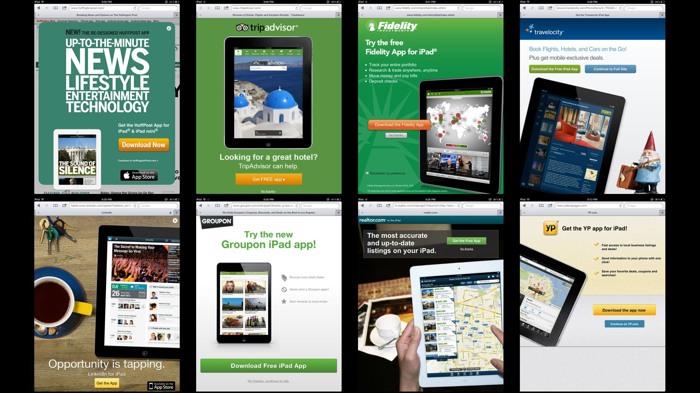
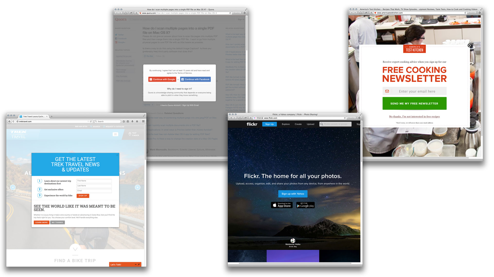

The economics of a web-based book, year two
This book has now completed its second year online. Last year, in my inaugural report, I described the revenue sources for the book. One of my findings was that only a small fraction of readers—about one in 650—supported the book with any kind of payment.
Did it work? Sort of. Though revenue met my expectations, I had to revise my view of how traffic relates to revenue.
Going into year two, I expected revenue to drop. Why? Because I expected traffic to drop too. In year one, the book got a lot of good word-of-mouth because it was new. For which I’m grateful. But you only get to be new once. The greater challenge—as it is for authors of printed books—would be turning the book into source of sustainable, recurring revenue. (And not because this is how you get rich in publishing—rather, it’s how you have any chance of breaking even.)
How did I change the book to encourage more direct payments? Not as much as I could have, I concede. In how to pay for this book, I reduced the number of suggested options. I made it easier to make a direct payment with a credit card.
But I didn’t do the thing I knew would be most effective: namely, loading up the rest of the book with links to the payment page, along with incessant nagging and wheedling. Have you paid yet? No you haven’t. Here’s how you pay. Click here. Hey, you’re not clicking. Please click. Please please please. PLEEEEEEEEAAAAA—
Why not? Because it would have been effing awful. Like so much of the web in 2015. Haven’t you noticed? A couple years ago, we saw the ominous cellular mutations—websites on tablets and phones were becoming ads for apps.

Now, the cancer has metastasized onto the desktop. I’m not talking about banner ads—we cleverly blocked those, of course. But the reward for our cleverness has been a web that increasingly relies on wheedling, whining, and nagging. The pariah popup window of yore has been reinvented as the homepage-hogging input form. Most commonly, this nagging is a demand that we sign up for an email list (aka more nagging, direct to your inbox) or that we complete an obviously unnecessary registration—which usually implies joining an email list, which in turn means … right.

I say this not to gripe. I say this because though I understand why this shift is accelerating—in short, because the web is terrible at making information expensive—it’s not a shift I want to be part of.
Rather, because every commercial artist—sensitive or not—controls only two things: their work, and the terms under which their work is offered. By terms
Part of why this book works is that it’s not polluted with nagging and wheedling. I specifically wanted it to be a calm oasis on the noisy web—a chance to rediscover something we like about printed books, which is the immersion and focus that can be created by nothing but text and typography. That part is not incidental; it’s intrinsic.
Oh, I don’t know.
I walked away. The agent was flabbergasted. To her, my job as an author was to produce a sequence of words that other people would shepherd to market. Perhaps if my topic were different, that would be true. But a book about typography necessarily involves showing, not just telling.
So here we are.
In year one, I collected 321 payments totaling $3676. In year two, consistent with my reduced expectations, I collected 244 payments totaling $3030. Not bad. The 25% drop in transactions was offset by a higher payment amount, so the gross revenue was only 18% less.
Recall from last year’s report that the average paperback sells a total of about 1000–3000 copies, with the author getting about $2–3 per book. On that basis, I can’t say I’m doing worse than I would’ve had I taken that paperback offer.
True—despite my objections to the nagging economy, I’m sure I could’ve discovered some subtle ways to induce more direct payments, had I spent more time on the problem. And some might say that my refusal to do so makes my web-publishing experiment unreliable. Perhaps.
The rub, however, is that developing and testing these techniques is itself expensive. If I spent a month on this problem and raised the annualized rate of payment by 25%, that would be a solid improvement. It would also imply that I got paid $750 for a month of labor. Not so good. Whereas if I could raise the payment rate by 300–500%, then the return on a month of labor would be worthwhile. But that kind of improvement would be ludicrously unrealistic.
Moreover, it would prove nothing generalizable. I’m someone who’s pretty decent at this web stuff. For a non-technically-minded author, these challenges would simply be insurmountable.
For year two, I estimate that there were 325 font sales attributable to Practical Typography, and by the same metric, imputed revenue of $8,125. That represents an 18% drop—the same as the percentage drop in direct-payment revenue.
This, in turn, suggests that a consistent ratio might emerge between the number of readers interested in paying for the book vs. how much they want to spend. For two years running, about 35% more readers were interested in paying $59–299 for a package of fonts than $5–20 for a direct payment for the book. (For that reason, if I were to spend a hypothetical month improving sales rates, it would make more sense to focus on increasing sales of fonts, not direct payments.)
The surprises arose with traffic. Recall that I expected sales to drop because I expected traffic to drop. And sales did drop. But traffic actually went up—from about 650,000 readers in year one to about 700,000 in year two.
This was both good news and bad news. Good news in the sense that traffic exceeded expectations. Bad news in the sense that the fraction of readers financially supporting the book decreased—from the year-one ratio of 649 : 1 to an even weaker 1000 : 1 or so.
In the broadest sense, we can say that more traffic is always better than less. But beyond that, we can sketch out two basic theories.
The first theory is that web traffic is like panning for gold in a river. The river contains a certain percentage of gold by volume. The longer you stay in the river, the more gold you’ll find.
The second theory also holds that web traffic is like panning for gold in a river. Occasionally, a massive sewer line bursts near the river, drenching you in a lot more liquid, but the same amount of gold. Now you have to stay longer in the river whether you want to or not.
I’m coming around to the second theory.
There have occasionally been traffic flows that had a high ratio of paying readers—Cool Tools comes to mind, as does Daring Fireball (John Gruber, your next dinner at Musso & Frank will be my treat). But these are very much the exception.
As a rule, quantity and quality have a negative correlation. Let’s go to the countdown:
Hacker News. I can’t say I understand the purpose of this site, founded by venture capitalist Paul Graham. I have two guesses. One is that it’s like Reddit for programmers, but they can claim that using it is work, not goofing off. My other guess, since it has no ads, is that it acts as Mr. Graham’s panopticon into his community of interest, as Cerebro does for Prof. Xavier. Anyhow, whatever bored programmers are spending their money on, it’s definitely not me.
Creative Bloq.
Like a lot of design-oriented sites offering “ tips and inspiration,” this one holds out the promise that if you just browse the web hard enough, you can become a better designer. No surprise that a site with a something-for-nothing philosophy mostly sends readers who don’t pay. (To be fair, its name plainly foretells the likely result of this approach.)Twitter. I’ve occasionally been criticized for my
“ write-only” policyBuzzFeed. Grudgingly, I respect BuzzFeed. They’re at least honest about what they’re doing—perfecting clickbait—and disciplined about their approach. My visitors arrive from this quintessentially BuzzFeedy listicle that has amassed 5.5 million views. But do these readers pay? Heavens no. It would practically be un-American.
Reddit.
Ugh. Reddit’s business plan is apparently to monetize as much vile toxic waste—racism, sexism, anti-Semitism, stolen celebrity nudes—as it can get away with. True, that material has always been available on the Internet. But it wasn’t until recently that it was fueled by millions in venture capital. What an accomplishment. Fittingly, many of my Reddit visitors arrive from a page titled “ Where do you go once Reddit has bored you?” Glad to help.
Obviously, a big reason much of this readership is unpaid is because these websites specialize in passing along single links, of which these were the most popular—
The Billionaire’s Typewriter. Despite its huge traffic, it did not even make me a hundredaire.
Typography in Ten Minutes. Always a favorite.
Why Racket? Why Lisp? OK, this was a case where raw quantity was useful. This article was basically a sales pitch for the open-source Racket programming language. If I got a few people interested, then it was worthwhile. (If you’re visiting from Hacker News, you might enjoy it more than this one.)
The Infinite-Pixel Screen. Though judging from the time spent on the page, many fewer finished it.
I’m not complaining about having a large unpaid readership. That describes most—nearly all?—websites. It’s more that as an author, I wonder what my relationship with these high-quantity / low-quality traffic generators ought to be.
Sure, it’s my responsibility to convince visitors to click from their landing page to something else. But the most common way to accomplish this is through more wheedling and nagging. I don’t dispute it would work. I just don’t feel that spending my time hip-deep in sewage will produce a worthwhile return. It would also make the site miserable for the nice people who do pay for it.
Instead, what if I totally blocked visitors from those five sites, and other traffic farms? Would it affect the revenue for this book? I doubt it. I wouldn’t mind finding out.
Don’t panic—I’m not really going to do that. Openness has benefits. It also has costs. I accept the costs because I believe in the benefits. But it’s a worthy thought experiment: can something be open to everyone, yet not really be for everyone?
This leads back to the earlier issue of terms. Exclusivity—meaning, selecting a customer base for quality, not just quantity—is often an important consideration in making a work successful. After year two, I suspect it’s also true for book authors. For year three, I’d like to reduce the ratio of unpaid to paid readership, even if it means reducing traffic. But I’m still working out how I can balance openness with exclusivity—without using blunt instruments.
For instance, Apple is often credited with proving that design excellence leads to market success. Not really. Apple’s resurgence is only incidentally about design. Mostly, it’s about carefully selecting a territory of valuable customers—in Apple’s case, status-conscious people with copious disposable income—and defending that territory tooth and nail. Apple does not sell great design. It sells design that flatters its owner. (And Apple’s timing has been perfect to exploit the rising tide of wealth inequality.)
It’s perhaps fitting that down the road from Apple, we have bottom-feeding behemoths like Facebook and Google. These companies are the sewage-treatment plants of the information age: shoveling the worst quality of human attention into piles, seasoning it with surveillance data, and packaging it into resalable chunks. But it’s an open question whether their skill is extracting hidden value from the web, or merely organizing its disappointments.
In that way, these web-advertising companies remind me mostly of the investment banks of 10 years ago that learned to perform similar alchemy on similar disappointments—namely, our nation’s subprime mortgages. If you just kept slicing and dicing and shifting, the thinking went, you could persuade others that the value would ultimately emerge.
Well, we know how that turned out.
As an author, part of me would like to opt out of the web that the Reddits and Creative Bloqs and Twitters are promoting. But in the long term, it’s unnecessary. Because by failing to invest in anything of enduring value, they’ve already consigned themselves to a permanent state of rootlessness. (Just like the last generation of Internet companies.) To beat them, I don’t have to outspend them, outrun them, or outwit them.
I just have to outlast them. So begins year three.
8 Aug 2015
I feel I ought to show you how to pay for this book, but let’s just say I’m keeping my expectations modest.